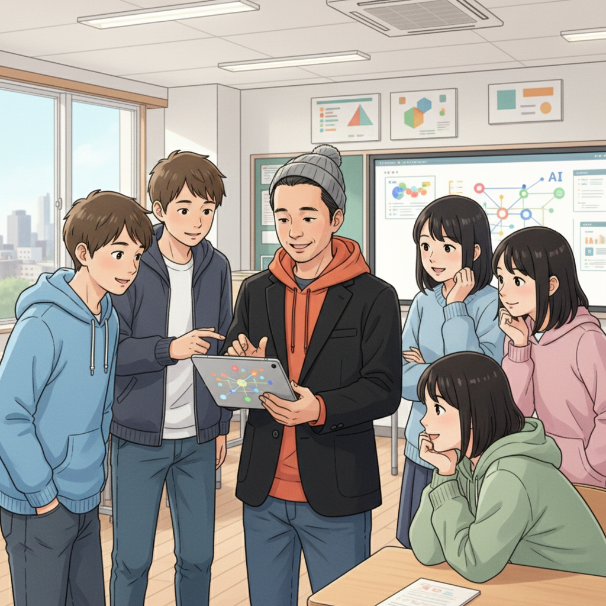

「苦手」を「得意」に！AI・ICTが変える学び方（高崎先生）
「勉強がどうしても続かない…」「周りのペースについていけない…」そんな風に悩んでいる君へ。もしかしたらそれは、君の持っている素晴らしい才能が、まだ上手く活かせていないだけなのかもしれません。
if塾では、AIやICTといったテクノロジーを駆使して、一人ひとりの発達特性に合わせた学び方を提案しています。例えば、ADHDの特性を持つ子が、ゲームを通して培った驚異的な集中力を、プログラミング学習に活かすことも可能です。
大切なのは、自分の「苦手」にばかり目を向けるのではなく、「得意」を伸ばすこと。AI・ICTは、そのための強力なツールになり得ます。ASD ICT 才能を開花させる第一歩を、一緒に踏み出してみませんか？
if塾では、ただ知識を詰め込むのではなく、君が本当に興味のあること、好きなことを軸に、AI・ICTを活用した独自のカリキュラムを組んでいます。小さな成功体験を積み重ねることで、自信を持って未来に向かって進んでいけるように、全力でサポートします。
ゲーム好きからIT起業家へ！集中力を武器にする井上CTOの物語（井上CTO）
「ゲームばかりして…」小さい頃、親や先生によく言われたという井上CTO。でも、彼はそのゲームへの情熱を、プログラミングという形で開花させました。
高校時代に高崎先生と出会い、ADHD ゲーム 集中力を活かせる道を見つけたのです。最初は簡単なゲームの改造から始め、徐々に本格的なプログラミングに挑戦。今では、if塾のICT教育を支える重要なメンバーとして活躍しています。
井上CTOは言います。「集中しすぎて、周りの声が聞こえなくなることもあるけど、それが僕の強み。一つのことに没頭できるからこそ、質の高いものが作れるんだ」と。
if塾では、彼の経験を活かし、ゲーム好きの子どもたちに、プログラミングの楽しさを伝えています。君も、大好きなゲームを、未来を切り拓く力に変えてみませんか？
特別支援学級から国立大学へ！山﨑塾長の逆転ストーリー（山﨑塾長）
山﨑塾長は、中学時代にADHDとASDの診断を受け、特別支援学級に通っていました。しかし、高校で高崎先生と出会い、人生が大きく変わったと言います。
「最初は、周りの人と同じようにできない自分に、すごく落ち込んでいました。でも、高崎先生は、『君には、他の人にはない才能がある』と言ってくれたんです」
高崎先生の指導のもと、山﨑塾長は自分の特性を理解し、それを強みに変える方法を学びました。そして、見事国立大学に合格。現在は、if塾の塾長として、後輩たちのサポートに力を注いでいます。
「僕の経験から言えるのは、絶対に諦めないでほしいということ。自分のペースで、少しずつでも前に進んでいけば、必ず道は開けます。if塾は、そんな君の背中を押し続ける場所です。」
AIで自分だけの学びを！if塾で見つける未来（高崎先生）

if塾では、AIを活用して、一人ひとりの個性や特性に合わせた、きめ細やかな学習プランを提供しています。例えば、ChatGPTやGeminiといった人工知能ツールを使って、苦手な分野を克服したり、興味のある分野を深く掘り下げたりすることができます。
また、機械学習の技術を活用して、君の学習データを分析し、最適な学習方法を提案することも可能です。ICT教育の可能性は無限大です。
if塾は、君が自信を持って未来を歩めるように、全力でサポートします。一歩踏み出して、新しい自分に出会ってみませんか？
私たちは、君の可能性を信じています。そして、君が自分らしく輝ける未来を、心から応援しています。